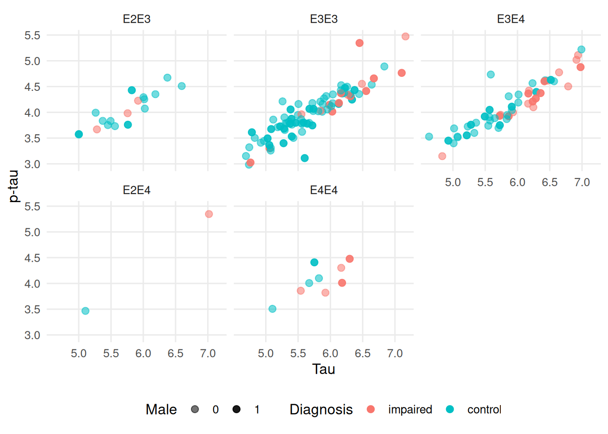
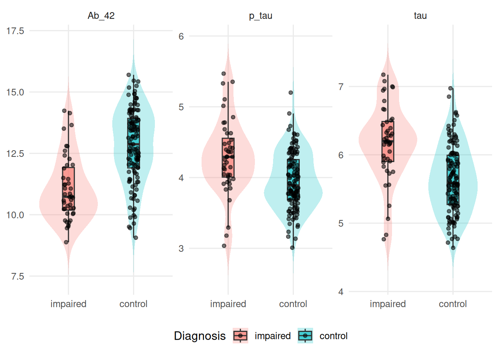
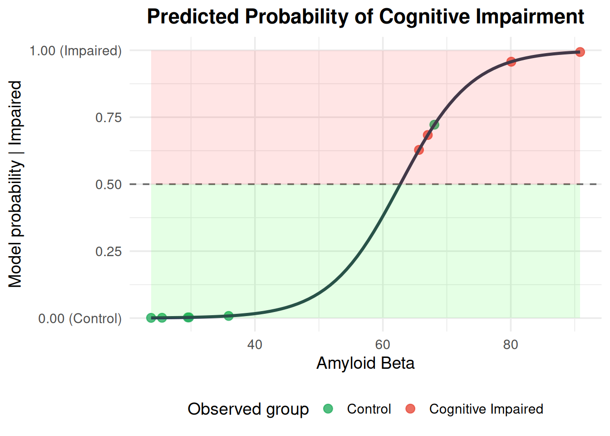
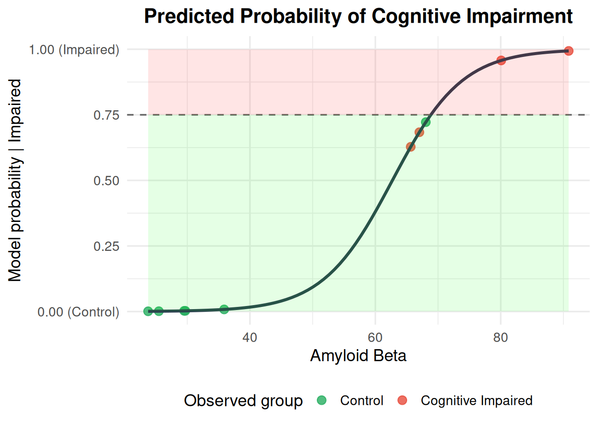
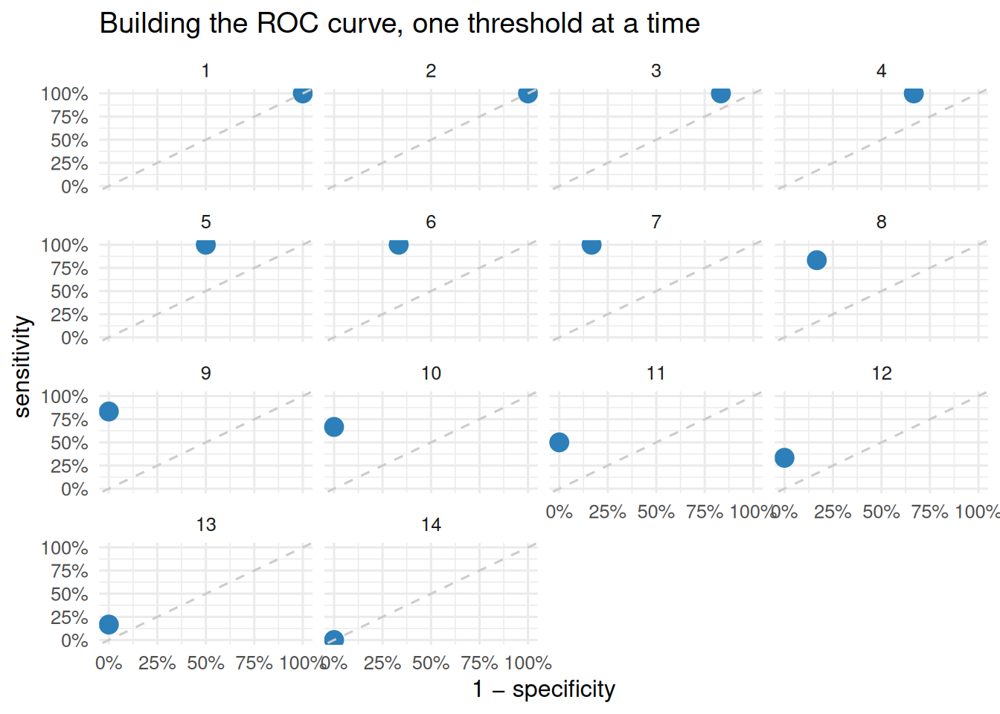
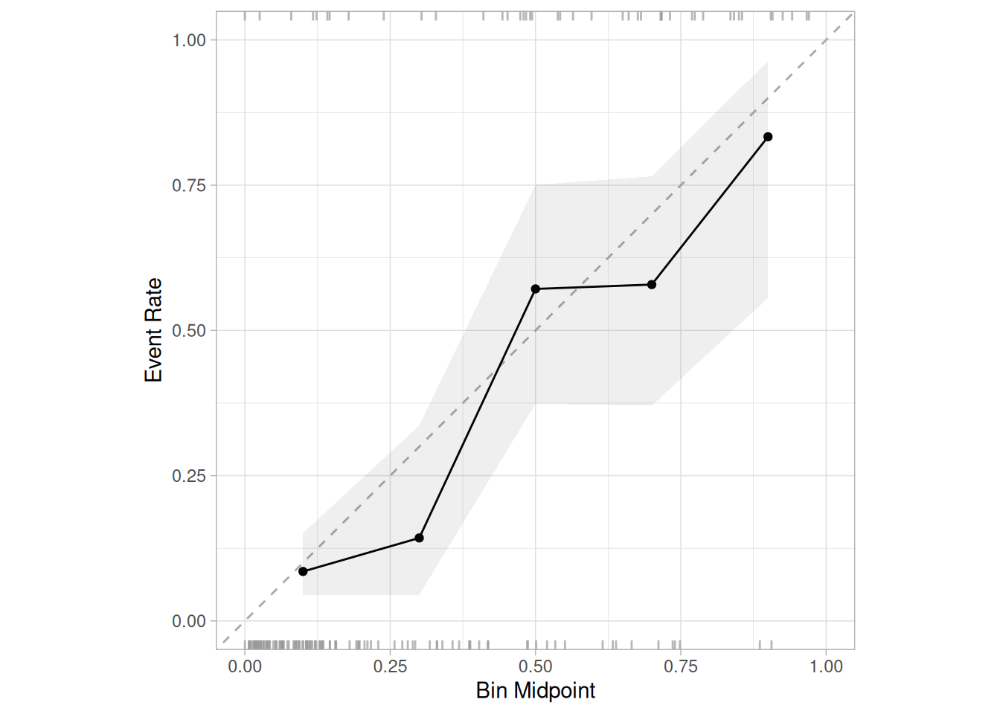
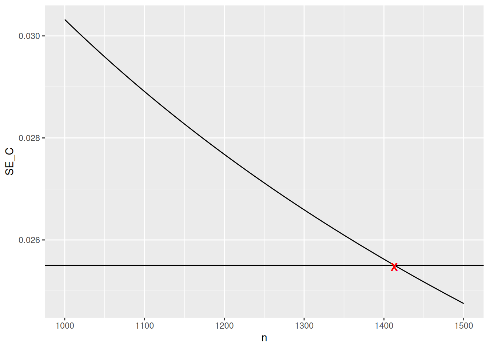

The slides contain speaking notes that you can view by pressing ‘S’ on the keyboard.
16.3 Case session 18: “From prediction to validation: How do we know our model works?”
At NeuroPhaRma Inc., a biotech company developing tools for early detection of Alzheimer’s disease, the research team has developed a prediction model to predict individual patient’s cognitive impairment using their age, sex, cerebrospinal fluid biomarkers, and APOE genotype.
The model performs well on the data used to develop it. The team is excited: could this tool help clinicians identify patients who need further assessment?
Before the company presents the model to potential clinical partners, however, the biostatistics team must answer a crucial question:
“The model makes predictions. But how well can we trust them in real patients?”
As a junior biostatistician, you have been asked to evaluate the model before it moves forward. You must assess how well it distinguishes patients with and without cognitive impairment, whether its predicted probabilities reflect the risks actually observed, and whether its performance holds up in new data.
Your task is to evaluate whether the model’s predictions can be trusted.
How would you assess whether the predicted risks agree with the observed frequency of cognitive impairment, and whether the model systematically over- or underestimates risk?
How would you determine how well the model distinguishes between patients with and without impairment?
Finally, how would you investigate whether these properties hold in new patients, rather than only in the data used to develop the model?
At the project meeting, you will need to advise the team: is the model reliable enough to be considered for use in clinical practice, and what further evidence is needed before it can be trusted?
While causal models are great for knowing how effective a thing is, sometimes you just want to know how likely this is to happen.
For example, suppose you’re into gambling and want to bet money on horse rides at Aalborg Travbane. You don’t need info on why a particylar jokey and horse wins — you’ll be happy just knowing whether it wins or not. The great thing about prediction models is that it will take any horse and provide a prediction. Thus, prediction models are capable of making individual judgements.
But consider the counter example. You are told that your dog is sick and will likely die. This information is worthless without knowing what to do about it. You want an intervention — a trick to counteract the sickness. This requires causal information. Often, the veterinarian will not know exactly what your dog needs, but they will know that any dog will get sick from eating chocolate. Indeed, some unique dogs might tolerate it better, but the negative effect is causal on a population level.
Most scientific fields bennefit from both approaches. Take the weather, for example. The majority of people don’t care why it will rain or why the temperature drops 10 degrees over night. But it is expremely useful information to the industry (formers, sailors, outdoor events, public transportation). And most people want to know the weather in their specific part of the world. But in the face of climate change, we also need to know why the earth is experiencing global warming. Just knowing that the earth will be 1.2 degrees warmer in 10 years will not help us keep the temperature lower or prevent the disaster.
Read about this PhD-project at AAU: https://www.cs.aau.dk/kunstig-intelligens-kan-forudsige-hvor-laenge-du-skal-vaere-indlagt-n89354?utm
Discuss:
How are variable selection and confounding treated in prediction models?
What decision does the prediction help with?
Could a variable be very useful for predicting length of stay without causing a longer stay?
Would you trust the model if it made very accurate predictions but you didn’t understand why it worked?
What would be different if the hospital wanted to know what intervention would shorten the patient’s stay?
Prediction models cannot inform intervention. Only risk assessment and potential willingness to act — but what to act on?
16.5 Our dataset context
The ad_validation_logistic data are particularly convenient because they already contain observed classes and out-of-sample predicted probabilities from a logistic regression model.
The dataset was made based on the following logistic regression classifier:
# Logistic regressionmodel<-glm(impairment~age+male+tau+p_tau+Ab_42+Genotype, data =train, family =binomial)
So
\[
\text{impairment}_i \sim age + male + tau + p\_tau + Ab\_42 + genotype
\] where:
age: Normalized unit
male: Reported sex was male
tau: Tau protein stabilizes microtubules in axons. They can form insoluble neurofibrillary tangles when floating around freely. Here, the concentration was measured in the cerebrospinal fluid via lumbar puncture.
p_tau: Phosphorylated tau neurofibrillary tangles in the cerebrospinal fluid. Here, the concentration was measured in the cerebrospinal fluid via lumbar puncture.
Ab_42: Amyloid beta 42 (Aβ42) is a 42-amino-acid peptide derived from the amyloid precursor protein that forms the plaques found in the brains of people with Alzheimer’s disease.
genotype: The APOE allele pair. Can be E2E2, E2E3, E3E3, E3E4, E2E4, or E4E4. .
We want to predict patients with cognitive impairment defined by a gold-standard neurophyschological test (such as the Wechsler’s Adult Intelligence Score).
# A tibble: 167 × 7
diagnosis age male tau p_tau Ab_42 Genotype
<fct> <dbl> <int> <dbl> <dbl> <dbl> <fct>
1 control 0.988 0 6.30 4.35 12.0 E3E3
2 control 0.987 1 6.27 4.40 12.3 E3E4
3 control 0.987 0 6.62 4.52 11.0 E3E3
4 control 0.985 1 5.74 3.75 14.3 E2E3
5 control 0.984 0 4.98 3.46 13.7 E3E3
6 impaired 0.986 0 6.16 4.43 9.76 E3E4
7 impaired 0.984 1 5.06 3.29 11.3 E3E3
8 control 0.988 0 6.25 4.52 12.2 E3E3
9 impaired 0.986 1 5.99 4.13 11.9 E3E3
10 control 0.988 0 4.77 3.33 11.3 E3E3
# ℹ 157 more rows
Code
p1<-ggplot(test, aes(tau, p_tau, colour =diagnosis))+geom_point(aes(alpha =factor(male)), size =2.4, position =position_jitter(width =0.03, height =0.03))+facet_wrap(~Genotype)+scale_alpha_manual( values =c(`0` =0.55, `1` =0.9), name ="Male")+labs( x ="Tau", y ="p-tau", colour ="Diagnosis")+theme_minimal(base_size =12)+theme( panel.grid.minor =element_blank(), legend.position ="bottom")p1

Code
biomarkers<-test|>pivot_longer( cols =c(tau, p_tau, Ab_42), names_to ="biomarker", values_to ="value")p2<-ggplot(biomarkers,aes(diagnosis, value, fill =diagnosis))+geom_violin( alpha =0.25, colour =NA, trim =FALSE)+geom_boxplot( width =0.18, outlier.shape =NA, alpha =0.65)+geom_jitter( width =0.08, height =0, size =1.4, alpha =0.55)+facet_wrap(~biomarker, scales ="free_y")+labs( x =NULL, y =NULL, fill ="Diagnosis")+theme_minimal(base_size =12)+theme( panel.grid.minor =element_blank(), legend.position ="bottom")p2

16.5.1 Our model to validate:
Step
Specific issues
AlzheimerDisease model
1. Problem definition and data inspection
Aim: predictors or predictions? Selection, predictor definitions, and completeness, endpoint definition
Aim is to determine whether demographic, CSF biomarker, and genetic predictors can be used to predict Alzheimer’s disease/cognitive impairment and to provide individualized predicted probabilities. Data are derived from the AlzheimerDisease dataset based on a clinical study of CSF biomarkers for Alzheimer’s disease. The outcome is diagnosis, with levels impaired and control. The original observations were split by alternating rows, with even-numbered observations used for model training and odd-numbered observations used for validation.
Continuous predictors include normalized age, CSF total tau, phosphorylated tau (p_tau), and amyloid beta 42 (Ab_42). Sex is coded as the binary indicator male. APOE genotype is treated as a categorical predictor with six possible allele-pair categories: E2E2, E2E3, E3E3, E3E4, E2E4, and E4E4.
3. Model specification
Selection of main effects? Assessment of assumptions?
Logistic regression model specified as diagnosis ~ age + male + tau + p_tau + Ab_42 + Genotype. The model includes the specified main effects. No interaction terms or nonlinear transformations are described in the supplied model specification.
4. Model estimation
Shrinkage included?
The logistic regression model was fitted to the even-numbered training observations. No shrinkage or penalization is described in the supplied model specification.
5. Model performance
Appropriate measures used?
Predicted probabilities were generated for the odd-numbered validation observations, including probabilities for the impaired and control classes. Model performance can be assessed using discrimination and calibration; the supplied dataset specifically contains predicted probabilities and observed diagnoses, but does not specify particular performance measures.
6. Model validation
Internal validation including model specification and estimation?
Hold-out validation using the odd-numbered observations. The model was fitted exclusively to the even-numbered training observations and evaluated on the odd-numbered validation observations. This provides validation on observations not used to fit the model.
7. Model presentation
Format appropriate for audience
The validation dataset provides predicted probabilities for both impaired and control diagnoses alongside the observed diagnosis. This format is suitable for evaluating and presenting individual predicted risks, although the underlying logistic regression formula would be needed to reproduce individual predictions.
16.6 The ABCD Workflow
You have read the paper by Steyerberg & Vergouwe, 2014 (1) in which they propose an ABCD framework for validating prediction models. The acronym is:
Table 2. Overview of four measures (ABCD) for model performance
Aspect
Measure
Visualization
Characteristics
Calibration
A: Calibration-in-the-large (α)
Calibration plot
Intercept in the calibration plot; compares the mean observed outcome with the mean predicted probability.
Calibration
B: Calibration slope (β)
Calibration plot
Regression slope in the calibration plot; related to the amount of shrinkage required for the regression coefficients.
Discrimination
C: C-statistic
ROC curve
Interpreted as the probability that the model assigns a higher predicted probability to a randomly selected subject with the endpoint than to a randomly selected subject without the endpoint.
Clinical usefulness
D: Decision-curve analysis (Net Benefit)
Decision curve
Net true-positive classification rate achieved by using the model across a range of decision thresholds.
Figure 16.1
Discuss with your neighbour:
What does each step help answer?
Were you unsure about a concept or step?
Collect the questions and see whether they’re addressed by the end of the session — otherwise, ask!
16.7 Preparing the data
A prediction model can be evaluated from two things:
what actually happened;
and what the model predicted.
Here we use predictions from a logistic regression model. The model has already been trained, so we do not fit a model. We focus on evaluating its predictions.
Class is the observed outcome. .pred_impaired is the model’s predicted probability that the patient will show cognitive impairment.
ad_validation_logistic
# A tibble: 167 × 3
.pred_impaired .pred_control Class
<dbl> <dbl> <fct>
1 0.403 0.597 control
2 0.665 0.335 control
3 0.712 0.288 control
4 0.293 0.707 control
5 0.0143 0.986 control
6 0.565 0.435 impaired
7 0.178 0.822 impaired
8 0.229 0.771 control
9 0.443 0.557 impaired
10 0.0225 0.977 control
# ℹ 157 more rows
As we can se, the prediction model is actually not making binary (yes, no) predictions. This is crusial knowledge! Most prediction models make probability statements, saying that:
\[
p(\text{impaired} | θ_i) = x_i
\]
In words:
The model probability for being impaired is given by all subject-specific predictors, θ. Thus, it logically follows that the probability for not being inpaired is \(1 - p(\text{impaired} | θ_i)\).
However, we need to draw a line in the sand somewhere, in order to evaluate the model.
To work with our data, we must turn probabilities into classes. Here we use 0.5 as the threshold: if the predicted probability of impairment is at least 0.5, we classify the participant as impaired; otherwise, we classify them as a control.
In a clinical reality, however, this is a complex issue that needs careful and clever decisions. We have therefore dedicated a full session (later) for tackling this specific decision. For the remainder of this session, we’ll not discuss the clinical implications of the threshold.
16.8 Quantifying binary prediction success
In binary outcomes, there’s really only four cases:
The model predicted class A, which was correct
The model predicted class A, which was incorrect (it was B)
The model predicted class B, which was correct
The model predicted class B, which was incorrect (it was A)
We need to work with these four cases in a clever way.
As you will see from this session, the field has defined countless of interesting and sophisticated ways to work with this type of data.
We’ll start by organizing the raw data in a matrix. This matrix is the foundation for almost all outcomes we’ll work with, such as accuracy, specificity, sensitivity.
This will also lead to the idea of the receiver operating characteristic (ROC) and area under its curve (AUC).
16.8.1 It all starts with the confusion matrix
As always, we’ll start simple and build up the complexity.
Imagine a model which predicts cognitive impairment solely by the level of CSF amyloid beta plaque concentration. The model receives a concentration value and feeds back a probability. We can visualize this imaginary model as Figure 16.2.

Figure 16.2
How many was correctly classified?
We can make a confusion matrix — a 2×2 table that shows how many observations were classified (in)correctly for each class.
For the fictitious data we plotted in Figure 16.2, the confusion matrix would be:
True: impaired
True: control
Predicted: impaired
4
1
Predicted: control
0
4
yardstick has a function to compute this for our larger dataset. Recall that we have multiple predictors, so this would have been impossible to plot in a 2D coordinate system 😅
conf_mat(predictions, truth =Class, estimate =.pred_class)
Truth
Prediction impaired control
impaired 25 14
control 19 109
A confusion matrix is useful because it lets us see what kinds of mistakes the model is making, rather than giving us just one summary number.
We spot an interesting pattern:
There are many more control participants than cognitively impaired participants.
labeling the cognitive impairment was not a success — only 25 out of 44 were labeled correctly!
labeling the control participants much better — 109 out of 123 were labeled correctly!
Imbalanced data can cause several issues. In our dataset, there are many more controls than cognitively impaired participants. The model can therefore appear to perform well simply by being good at predicting the more common class.
So rather than looking only at the percentage of observations classified correctly, we can use metrics that explicitly describe different types of classification errors.
We can quickly calculate four relevant metrics by hand:
Prediction Truth
Impaired (Positive)
Control (Negative)
Impaired (Positive)
TP = 25
FP = 14
Control (Negative)
FN = 19
TN = 109
Metric
Formula
Result
Sensitivity (TPR)
TP / (TP + FN)
56.8%
Specificity (TNR)
TN / (TN + FP)
88.6%
False Positive Rate
FP / (FP + TN)
11.4%
False Negative Rate
FN / (FN + TP)
43.2%
False Negative Rate
TP + TN / (TP + TN + FP FN)
80.2%
where:
TP = True Positive
FP = False Positive
TP = True Negative
FP = False Negative
16.8.2 Accuracy
Accuracy answers a simple question:
How often does the model get the class right?
Accuracy is the proportion of all observations that were classified correctly:
The accuracy was 0.802. This means that about 80.2% of all participants were classified correctly.
Accuracy is easy to understand, but it has an important limitation:
it does not tell us which class the model gets wrong
It can also be misleading when the classes are unbalanced.
For example, imagine that 95% of participants were controls. A model that always predicted “control” would have 95% accuracy, despite completely failing to identify anyone with cognitive impairment.
This is why it is useful to look separately at the model’s performance for the different classes.
16.8.3 Specificity
Specificity asks:
Among people who are not “impaired”, how many does the model correctly identify?
Specificity measures how well the model identifies the negative class — here, the control participants.
In other words, specificity is the proportion of actual controls that the model correctly labels as controls.
The specificity was 0.886. This means that 88.6% of the participants who were actually controls were correctly identified as controls.
A highly specific model produces few false positives: it rarely labels a control participant as cognitively impaired.
Specificity is therefore particularly useful when false positives are costly or problematic. For example, in a screening context, a false positive might lead to unnecessary further testing or concern.
16.8.4 Sensitivity
Sensitivity asks:
Among people who are “impaired”, how many does the model correctly identify?
Sensitivity measures how well the model identifies the positive class — here, cognitively impaired participants.
\[
Specificity = \frac{TN}{TN + FP}
\]
In other words, sensitivity is the proportion of participants who are actually impaired that the model correctly identifies as impaired.
The sensitivity was 0.568. This means that 56.8% of the participants who were actually cognitively impaired were correctly identified by the model.
A highly sensitive model produces few false negatives: it rarely misses a participant who is actually impaired.
This distinction between sensitivity and specificity is important. A model can have high specificity while having relatively low sensitivity, as we see here. Our model is quite good at recognizing controls, but it misses a substantial proportion of participants with cognitive impairment.
16.8.5 Discussion task: Setting a proability threshold
Sensitivity and specificity depend on the chosen probability threshold. We used 0.5 above, but there is nothing inherently special about 0.5.
Changing the threshold changes the balance between false positives and false negatives. A lower threshold makes the model more willing to classify someone as impaired. This will generally increase sensitivity, because fewer impaired participants are missed, but it can also decrease specificity, because more controls may be incorrectly labeled as impaired.
Conversely, a higher threshold makes the model more conservative about calling someone impaired. This can increase specificity but may reduce sensitivity.
In a clinical application, the useful threshold should therefore be chosen based on the consequences of the two types of errors, rather than simply because 0.5 is a convenient number.
This is one reason why reporting accuracy alone is often not enough: two models can have similar accuracy while having very different sensitivity and specificity, and those differences can matter a great deal in practice.
Discucss with your neighbor:
which diagnosis would you prefer a lower probability? Why?
which diagnosis would you prefer a higher probability? Why?
Consider consequences of the diagnosis, like:
Cost of treatment
Side-effects
Effectiveness of treatment
16.8.6 The receiver operating characteristic (ROC)
Instead of choosing one threshold, we can look at model discrimination across all possible thresholds.
Let’s go back to our imaginary model:
Threshold at 50%

Threshold at 75%
As you can see, this changes the confusion matrix from:
True: impaired
True: control
Predicted: impaired
4
1
Predicted: control
0
4
to
True: impaired
True: control
Predicted: impaired
2
0
Predicted: control
2
5
So we improved the model specificity (from 80% to 100%) at the cost of its sensitivity (from 100% to 50%).
Imagine computing the sensitivity and specificity for every possible threshold the data could have. This would indeed require a lot of confusion matrixes and a lot of computations. We will settle with only computing the sensitivity and the \(1 - specificity\), which is called false positive rate. We do this for an imaginary model in Figure 16.3 with the corresponding confusion matrices in Figure 16.4.

Figure 16.3: Threshold at 14 different threshold: 100%, 95%, 82%, 78% … 0%
iteration
threshold
plot
1
-Inf
2
0.1
3
0.25
4
0.35
5
0.44
6
0.49
7
0.57
8
0.61
9
0.68
10
0.7
11
0.78
12
0.82
13
0.95
14
Inf
Figure 16.4
Now, that is indeed a lot of output — and this is only for a dataset of 12! 👀
To wrap it all up, instead of plotting all the dots in different coordinate systems, we can draw a line connecting the dots in one plot.
Luckily, there’s a nice function for this in yardstick:
AUC can be interpreted as the probability that the model assigns a higher predicted probability to a randomly chosen “impaired” observation than to a randomly chosen “control” observation.
AUC measures discrimination. It does not tell us whether the predicted probabilities themselves are accurate. For this, we need to assess calibration, which is covered in the next section.
16.9 Calibration
Now, we move away from the world of confusion matrices. Recall that the prediction model initially only had probabilities (that is, before we made a decision threshold for a class).
Calibration refers to the agreement between predicted probabilities and observed outcome frequencies. For example, among patients assigned a predicted risk of cognitive decline of 15%, approximately 15% should experience cognitive decline.
In other words:
Are the probabilities generated from the prediction model actually useful as probabilities in reality?
If the answer is no, then any further decisions based on it’s probabilities (threshold, confusion matrix, ROC, AUC, etc) is basically meaningless 😅
So let’s try to evaluate this!
16.9.1 A: Calibration in the large
Calibration-in-the-large (CITL) assesses whether predicted risks are systematically too high or too low overall. It is commonly estimated using logistic regression with the logit of the predicted risk as an offset, fixing its coefficient at 1. The estimated intercept quantifies the overall calibration error.
To estimate the CITL, we use the following logistic regression model:
where \(\hat{p}_i\) the predicted risk from the original model and the coefficient of logit(\(\hat{p}_i\)) is fixed at 1. The estimated intercept α is the calibration-in-the-large.
citl = 1: no overall calibration-in-the-large error.
citl < 1: predicted risks are too high on average.
citl > 1: predicted risks are too low on average.
Remember the offset from Chapter 14? The key difference is that an offset in Poisson regression adjusts the expected count for exposure, whereas an offset in logistic regression contributes a known term to the log-odds, with its coefficient fixed at 1.
An offset adds a term with its coefficient fixed at 1, rather than estimated. Our model is:
\[
logit(q_i) = α + o_i
\] where \(o_i\) are the logit of the prediction-model’s estimated probabilities,
\[
o_i = logit(\hat{p}_i)
\]
The interpretation
The model assumes that the known baseline odds, \(\frac{p_i}{1 - p_i}\), enter with exactly the specified probabilities. The regression estimates the adjustment to those odds from the model-predicted odds.
NoteCalibration is more than the CITL!
A CITL = 0 does not mean the model is perfectly calibrated. It means there is no overall calibration-in-the-large error. The predictions can still be poorly calibrated across the range of predicted risks, which is why calibration slope and calibration plots are useful complementary assessments.
16.9.2 B: The calibration slope
So the CITL measures a systematic bias: the average predicted probability is too large. The calibration slope is a measure of the association between observed and predicted tisk of the outcome event across the whole range of predicted risks. So not a systematic error, but a errors across the prediction range.
To estimate the calibration slope, we use another logistic regression model:
\[
logit(P(Y = 1)) = α + ζlogit(\hat{p})
\]
Here, we are interested in estimating ζ (“zeta”), while the model also estimates a separate intercept α. This model is straight forward to interpret and works similarly to other logistic regression models you have worked with.
ζ = 1: ideal calibration slope.
ζ < 1: typically indicates overfitting, with predictions that are too extreme.
ζ > 1: typically indicates underfitting, with predictions that are not extreme enough.
WarningIntercept from the slope model
One important distinction: the intercept from this model is not the same as the calibration-in-the-large.
16.9.3 Running the models in R
The following code demonstrates how to estimate CITL and the calibration slope in R:
citl_model<-ad_validation_logistic|>mutate( outcome =Class=="impaired", logit_p =log(.pred_impaired/(1-.pred_impaired)))|>glm(outcome~1+offset(logit_p), data =_, family =binomial())broom::tidy(citl_model, conf.int =TRUE, exponentiate =TRUE)
As always, we recommend visualizing any statistical procedure. We can do this in a plot like Figure 16.5. In a calibration plot, the x-axis shows predicted probabilities and the y-axis shows observed outcome proportions. Both axes range from 0 to 100%. The diagonal ideal line represents perfect calibration: for example, a predicted risk of 15% corresponds to an observed outcome proportion of 15%.
Because the outcome is binary, we cannot directly compare each individual’s predicted probability with an observed proportion: each individual either experiences the outcome or does not. Instead, calibration plots often group individuals into bins/bockets based on their predicted risks. Within each bin, we calculate the mean predicted risk and the observed proportion of individuals who experienced the outcome. These values provide a summary of predicted and observed risk for that group.
For example, consider a validation dataset divided into five bins according to predicted risk:
Bin
Mean predicted risk (x-axis)
Observed outcome proportion (y-axis)
Interpretation
1 (0%—19%)
5%
4%
Slight overprediction
2 (20%—39%)
15%
15%
Perfect calibration
3 (40%—59%)
30%
35%
Underprediction
4 (60%—79%)
50%
45%
Overprediction
5 (80%—100%)
80%
75%
Overprediction
Each row corresponds to a point in the calibration plot, with mean predicted risk on the x-axis and observed outcome proportion on the y-axis. Points below the diagonal indicate overprediction, while points above the diagonal indicate underprediction. In practice, the number of bins and their boundaries affect the plot, and the observed proportions can be imprecise when bins contain few individuals.
The probably package provides a nice function for plotting the calibration curve:
cal_plot_breaks(ad_validation_logistic,Class,.pred_impaired, num_breaks =5# number of bins we want)

Figure 16.5
A well-calibrated model follows the diagonal line.
We can also visualize a smooth calibration curve, which assesses calibration across the range of predicted risks without relying on fixed bins:
Notice how the prediction-model we are validating is generally over-predicting? You can tell from, e.g., bin two in Figure 16.5 — the model (x-axis) give ~30% probability for a bunch of predictions that have an event rate of ~13% probability. So the model is giving predictions far above what it should!
This also corresponds to our CITL being below 1 and our slope being below 1.
So we’ve covered calibration 🎉
Calibration is about the accuracy of the predicted probabilities. But a model can have excellent discrimination and poor calibration — that is, it may correctly rank individuals from lower to higher risk while systematically overestimating or underestimating their absolute risks. To evaluate discrimination, we use the C-statistic.
16.10 Discrimination using the concordance statistic
Discrimination refers to the ability of the model to distinguish a patient with the endpoint (cognitive impairment) from a patient without (control). A better discriminating model has more spread between the predictions than a poorly discriminating model.
Consider the extreme example where a model predicts all subjects to have the same predicted risk as the incidence. This model would have perfect calibration — but it would be useless since it does not discriminate between patients! 😅
A validation plot showing a wide spread between predictions as a histogram, or between deciles of predicted risk, indicates a good discriminating model, see Figure 16.5.
We use the concordance (c) statistic as an outcome for the models ability to discriminate between groups. For a binary endpoint, c is identical to the AUC Section 16.8.7.
In our data, we have a AUC of 0.840 — so the c-statistic (i.e., concordance) is also 0.84.
Intuition of C-statistic
Imagine you play a game with your model. You pick every possible pair of people from your data where one person had the event (1) and the other person did not (0).
You ask your model:
“Which of these two people had a higher predicted probability of the event?
There are three possible outcomes for each pair:
Concordant pair: The model assigns a higher predicted probability to the person who actually had the event (1) than to the person who did not (0).
Discordant pair: The model gets it backward and assigns a higher probability to the person who did not have the event (0).
Tied pair: The model assigns the exact same probability to both people.
The c-statistic is simply the percentage of pairs that are concordant (plus half of the tied pairs) out of all possible pairs.
While calibration and discrimination are important for validating prediction model, neither reflect real clinical usefulness. Clinical usefulness can be boiled down to the ability to make better decisions with a model than without.
If a prediction model aims to guide treatment decisions, a cut-off is required to classify patients as either low risk (no treatment) or high risk (treatment is indicated). The cut-off is a decision threshold.
You will learn about decision-curve analysis in Workshop 3, where you will learn to specify a clinical action and the range of probability thresholds at which that action would be taken.
16.12 Internal and external validation
Everything we’ve done so far has been an internal validation — what do we mean by “internal”?
Recall that we initially made an arbitrary split of the data: all odd-numbered patient IDs were assigned to a test set and the even-numbered IDs to a validation set. Had we used all the data for our model, we could not have performed any independent validation!
16.12.1 Internal validation
Validating internally — using data from the same study or dataset that was used to develop the model — is useful for several reasons.
First, it allows us to estimate how well our model is likely to perform on new patients from the same target population. We can use part of our data to develop the model and hold back another part to evaluate its performance.
However, simply making one arbitrary split into training and validation data has some disadvantages. The estimated performance can depend heavily on which patients happen to end up in each set. With a small dataset, this can lead to substantial uncertainty in our estimate of model performance.
Cross-validation is a more robust way of making internal splits.
In \(k\)-fold cross-validation, we divide the data into \(k\) roughly equal-sized groups, or folds. We then:
Fit the model using \(k - 1\) folds.
Evaluate the model on the remaining fold.
Repeat this process k times, until every fold has been used as the validation data.
Average the results across all folds to obtain an estimate of model performance.
For example, in 5-fold cross-validation (see Figure 16.6), each patient is used for validation once and for model development four times.
Cross-validation therefore makes more efficient use of a limited dataset than a single train/test split. It is particularly useful when the available dataset is relatively small.
To get the k-fold cross-validation AUC, you would have to run the regression model k times, each time splitting the data in a new way (see Figure 16.6). Thereby, you would get k AUC estimates. The AUC you would report would be:
\[
\frac{1}{k}\sum^k_{k=1}\text{AUC}_k
\]
It is common to use 5 or 10 folds.
Importantly, cross-validation is still internal validation. The patients used to evaluate the model come from the same underlying study and therefore may share characteristics with the patients used to develop the model.
flowchart LR
subgraph CV["5-Fold Cross-Validation"]
direction TB
subgraph R1["Iteration 1"]
direction LR
A11["Test"]:::test --- A12["Train"]:::train --- A13["Train"]:::train --- A14["Train"]:::train --- A15["Train"]:::train
end
subgraph R2["Iteration 2"]
direction LR
A21["Train"]:::train --- A22["Test"]:::test --- A23["Train"]:::train --- A24["Train"]:::train --- A25["Train"]:::train
end
subgraph R3["Iteration 3"]
direction LR
A31["Train"]:::train --- A32["Train"]:::train --- A33["Test"]:::test --- A34["Train"]:::train --- A35["Train"]:::train
end
subgraph R4["Iteration 4"]
direction LR
A41["Train"]:::train --- A42["Train"]:::train --- A43["Train"]:::train --- A44["Test"]:::test --- A45["Train"]:::train
end
subgraph R5["Iteration 5"]
direction LR
A51["Train"]:::train --- A52["Train"]:::train --- A53["Train"]:::train --- A54["Train"]:::train --- A55["Test"]:::test
end
end
A15 ~~~ M1["Metric 1"]:::metric
A25 ~~~ M2["Metric 2"]:::metric
A35 ~~~ M3["Metric 3"]:::metric
A45 ~~~ M4["Metric 4"]:::metric
A55 ~~~ M5["Metric 5"]:::metric
M1 --> AVG["Average<br/>performance"]:::average
M2 --> AVG
M3 --> AVG
M4 --> AVG
M5 --> AVG
classDef train fill:#55c5d5,stroke:#55c5d5,color:#000
classDef test fill:#d91b91,stroke:#d91b91,color:#fff
classDef metric fill:#8cf4f5,stroke:#8cf4f5,color:#000
classDef average fill:#8cf4f5,stroke:#8cf4f5,color:#000
style CV fill:transparent,stroke:transparent
style R1 fill:transparent,stroke:transparent
style R2 fill:transparent,stroke:transparent
style R3 fill:transparent,stroke:transparent
style R4 fill:transparent,stroke:transparent
style R5 fill:transparent,stroke:transparent
Figure 16.6: Cross-validation for internal validation’.
16.12.2 External validation
Validating externally — using data from other studies, hospitals, populations, or settings — is necessary if we want to know whether a model generalises beyond the data on which it was developed.
A model can perform very well during internal validation but perform much worse when applied to new data. This can happen because the new patients, clinical practices, measurements, or disease prevalence differ from those in the development dataset.
External validation therefore provides a much stronger test of whether a prediction model is likely to be useful in practice.
There are several ways in which we can perform external validation.
Temporal validation:
Develop the model using data from an earlier time period and evaluate it using patients from a later time period. This tests whether the model continues to work as patients and clinical practice change over time.
Geographical validation:
Develop the model using data from one geographical location, such as a hospital or country, and evaluate it using data from another location. This tests whether the model generalises to a different population or healthcare setting.
Domain validation:
Develop the model in one type of healthcare setting and evaluate it in another. For example, a model developed using patients from a specialist hospital could be evaluated in primary care.
Cross-setting validation:
Develop the model using one study and evaluate it using an entirely independent study. This is often the strongest form of external validation because the validation data were collected independently of the model development process.
The further the external validation data are from the development data, the more demanding the test of generalisability becomes.
16.12.3 When to use internal and external validation?
Internal and external validation can be seen as two levels of evidence:
Internal validation as the initial and inexpensive validation:
Statistical estimation of overfitting/underfitting
Best guess for future external validation and generalizability
Always possible
External validation as the necessary validation check:
Does my model still perform well when applied to genuinely new data from > another time, place, setting, or study?
A model should therefore not be considered ready for widespread clinical use simply because it performs well on its development data or under internal validation. External validation is needed to establish whether the model generalises to the population and setting in which we ultimately want to use it.
16.13 Sample size calculation in binary prediction studies
Before investing money and time in a prediction study, it’s often relevant to make inexpensive and sophisticated guesses on how many participants one needs to include before being able to say with confidence whether the model has potential or is useless.
Sample size calculations for prediction models need special care and are slightly different from causal effect studies.
16.13.1 Manual estimation using the c-statistic
Let’s define how we can determine the minimum sample size needed for a new external validation study of a prediction model for a binary outcome.
The calculations can also be used to inform whether the sample size of an existing (i.e., already collected) dataset is adequate for external validation
When externally validating a prediction model, sample size should be large enough to estimate model performance with sufficient precision. Riley et al. (2) propose calculating the required sample size separately for several performance measures and then using the largest required sample size.
In this course, however, you’ll learn to compute only one estimate by hand, but three methods using R code.
For sample-size planning, we need to select:
the anticipated C-statistic, \(C\);
the anticipated event proportion, \(\phi\); and
the desired precision, expressed as \(SE(C)\).
Riley et al. (2) use an approximate formula for the standard error:
This equation is not conveniently rearranged to give \(N\) directly. Instead, we will have to try different values of \(N\) until the resulting \(SE(C)\) is sufficiently small.
For example, suppose:
\[
𝐶 = 0.70, \\
𝜙 = 0.10.
\]
If we want the C-statistic to have an approximate 95% confidence interval of \(\pm0.05\), we need approximately
\[
𝑆𝐸(𝐶) = \frac{0.05}{1.96} ≈ 0.0255.
\]
We then increase \(N\) until the formula gives \(SE(C) \approx 0.0255\).
The resulting \(N\) is the required validation sample size for the C-statistic criterion.
# Our selected valuesp<-0.70n<-1000:1500pi<-0.10# Compute the first fractionbroek<-(p*(1-p))/(n^2*pi*(1-pi))# Break up the large formula insude the square brackets [ ] at every plus signled_1<-1led_2<-(n*pi-1)*((1-p)/(2-p))led_3<-(n*(1-pi)-1)*(p/(1+p))# Take the sqrt of it allSE_C<-sqrt(broek*(led_1+led_2+led_3))# Visualize valuesggplot(data.frame(n,SE_C),aes(n,SE_C))+geom_line()+geom_hline(yintercept=0.0255)+geom_text(aes(label ="x"), x =1413, y =0.0255, size =5, color ="red")

The interpretation is:
How many patients do I need to estimate the model’s ability to discriminate between patients with and without the outcome with the desired precision?
Because the C-statistic depends on comparisons between events and non-events, both the number of events and the number of non-events contribute information.
Be aware that many more sample size calculation methods exists! Best practice is to use several estimators and take the most conservative number (i.e., the largest value). But some of the other estimators are quite complicated and out of the scope of this course. Luckily for us, R provides easy access to the more complicated estimators.
16.13.2 Effect size calculation in R:
We’ll be using the {pmsampsize} pmsampsize, developed based on the Riley paper (2).
The package uses a more complex implementation of the manual C-statistic sample size calculation we covered.
Binary outcomes need to provide three criteria:
type should be b (for binary)
cstatistic is the C-statistic
parameters is the number of parameters in the model (we had 5 binary/continuous parameters + 6 dummy coded nominal genotypes = 11 parameters)
Calculate the minimum sample size for a logistic prediction model with 24 candidate predictor parameters, an anticipated outcome prevalence of 17.4%, and a C-statistic of 0.89 would look like this:
Given input C-statistic = 0.89 & prevalence = 0.174
Cox-Snell R-sq = 0.2902
NB: Assuming 0.05 acceptable difference in apparent & adjusted R-squared
NB: Assuming 0.05 margin of error in estimation of intercept
NB: Events per Predictor Parameter (EPP) assumes prevalence = 0.174
Samp_size Shrinkage Parameter CS_Rsq Max_Rsq Nag_Rsq EPP
Criteria 1 617 0.900 24 0.2902 0.603 0.481 4.47
Criteria 2 661 0.906 24 0.2902 0.603 0.481 4.79
Criteria 3 221 0.906 24 0.2902 0.603 0.481 1.60
Final 661 0.906 24 0.2902 0.603 0.481 4.79
Minimum sample size required for new model development based on user inputs = 661,
with 116 events (assuming an outcome prevalence = 0.174) and an EPP = 4.79
You can see 3 criteria:
The first criteria relates to calibration-in-the-large
The second criteria relates to the calibration slope
The third criteria relates to the C-statistic
The final recommendation is the largest N.
16.13.3 Summary
A useful way to remember prediction-model evaluation is the ABCD framework:
A — Calibration-in-the-large: are predictions systematically too high or too low?
B — Calibration slope: are predictions too extreme or not extreme enough?
C — C-statistic: how well does the model discriminate between outcomes?
D — Decision curve: does using the model improve clinical decisions?
This framework separates statistical performance from clinical usefulness.
A simple evaluation therefore looks like this:
Question
Measure
Does the model classify correctly at this threshold?
Accuracy
Does it avoid false positives?
Specificity
Does it avoid false negatives?
Sensitivity
Can it distinguish the two outcomes?
ROC / AUC
Are the probabilities accurate?
Calibration
Does it improve clinical decisions?
Decision curve
What is the effect of a predictor?
Effect estimate
The key idea is that no single metric evaluates a prediction model completely.
A useful model should discriminate well, produce sensible probabilities, and — most importantly — lead to better decisions.
required_N<-function(C, phi, desired_SE){# Check inputsif(C<=0.5||C>=1){stop("C must be greater than 0.5 and less than 1.")}if(phi<=0||phi>=1){stop("phi must be between 0 and 1.")}if(desired_SE<=0){stop("desired_SE must be positive.")}# Standard error as a function of Nse_fun<-function(N){sqrt(C*(1-C)/(N^2*phi*(1-phi))*(1+(N*phi-1)*(1-C)/(2-C)+(N*(1-phi)-1)*C/(1+C)))}# Find N such that SE(C) equals desired_SEresult<-uniroot(function(N)se_fun(N)-desired_SE, interval =c(2, 1e9))$root# Round up to the next whole participantN<-ceiling(result)# Return sample size and expected event countslist( N =N, expected_events =N*phi, expected_non_events =N*(1-phi), achieved_SE =se_fun(N))}required_N(C=0.75, 0.1, 0.05)
Given input C-statistic = 0.75 & prevalence = 0.1
Cox-Snell R-sq = 0.0746
NB: Assuming 0.05 acceptable difference in apparent & adjusted R-squared
NB: Assuming 0.05 margin of error in estimation of intercept
NB: Events per Predictor Parameter (EPP) assumes prevalence = 0.1
Samp_size Shrinkage Parameter CS_Rsq Max_Rsq Nag_Rsq EPP
Criteria 1 2774 0.900 24 0.0746 0.478 0.156 11.56
Criteria 2 954 0.757 24 0.0746 0.478 0.156 3.98
Criteria 3 139 0.900 24 0.0746 0.478 0.156 0.58
Final 2774 0.900 24 0.0746 0.478 0.156 11.56
Minimum sample size required for new model development based on user inputs = 2774,
with 278 events (assuming an outcome prevalence = 0.1) and an EPP = 11.56
1.
Steyerberg EW, Vergouwe Y. Towards better clinical prediction models: Seven steps for development and an ABCD for validation. European heart journal. 2014;35(29):1925–31.
2.
Riley RD, Debray TP, Collins GS, Archer L, Ensor J, Smeden M van, et al. Minimum sample size for external validation of a clinical prediction model with a binary outcome. Statistics in medicine. 2021;40(19):4230–51.

![]()
![]()
![]()
![]()
![]()
![]()
![]()
![]()
![]()
![]()
![]()
![]()
![]()